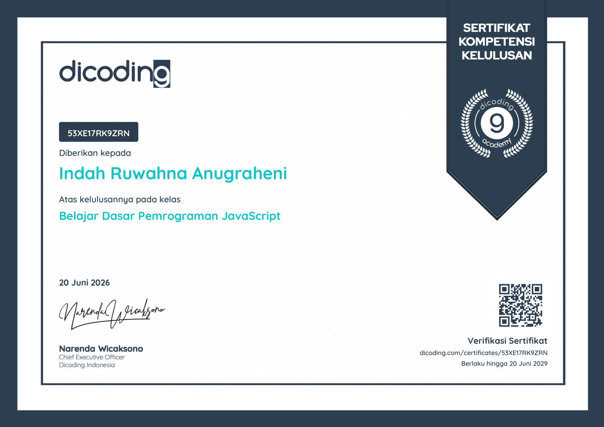

Juara I Kualifikasi Porprov Jawa Tengah 2023
Meraih predikat Juara I pada ajang kualifikasi Porprov Jawa Tengah dalam cabang olahraga Hockey Outdoor melalui kerja keras dan latihan konsisten.
Koleksi sertifikat kejuaraan olahraga dan piagam penghargaan resmi buatan Indah Ruwahna.
Meraih predikat Juara I pada ajang kualifikasi Porprov Jawa Tengah dalam cabang olahraga Hockey Outdoor melalui kerja keras dan latihan konsisten.

Piagam kejuaraan atas prestasi meraih Juara III dalam ajang turnamen Pekan Olahraga Provinsi (Porprov) Jawa Tengah cabang Hockey Outdoor.

Penghargaan atas kontribusi aktif dan dedikasi sosial dalam kegiatan kerelawanan dan pengabdian masyarakat di tingkat regional.

Penghargaan resmi atas kontribusi aktif sebagai pemateri dan fasilitator dalam sesi pelatihan intensif interaktif bagi peserta.

Sertifikat Pendidikan Dasar Kepemimpinan dan Manajemen Organisasi kampus Universitas Putra Bangsa sebagai bukti dedikasi organisasi.

Sertifikat keikutsertaan dan pengorganisasian kegiatan bina karakter Camp Ceria kepemudaan untuk pemberdayaan generasi muda.

Sertifikat kompetensi resmi dari Dicoding Indonesia dalam membangun aplikasi web front-end yang interaktif, responsif, dan terstruktur.

Sertifikat kelulusan kelas JavaScript modern yang mencakup manipulasi DOM, konsep asynchronous, dan logika pemrograman web.

Sertifikat standar industri untuk pembuatan struktur HTML5 dan tata letak CSS3 yang bersih dan sesuai standar W3C.